How to connect the keyboard with a computer Wired Connection
Slide the ONN/OFF switch on left side of the keyboard to OFF.
Take out the USB A to USB Type C cable in the package and connect the keyboard with your computer, Press FN+5(USB)key, the LED marked with M twinkle in 5 times indicated the conencting sucessful.
The computer will recognize and configure the keyboard automatically.Once the keyboard is powered up, charging begins. The LED marked with M lights on red. It will turn to white when keyboard is fully recharged
2. 4G Wireless Connection
1. Slide the ON/OFF switch on left side of keyboard to ON.
2. press [FN)+[4) for about 3 seconds, the LED marked with M flashes quickly in green,plug the USB receiver into any available USB port on your computer within 20 seconds. The computer will recognize and configure the keyboard automatically.
3. The indicator will flash on Red when the battery is low. Please recharge the keyboard in time by plug type C cable into computer or it will turn off automatically soon,Please note LED marked with M will be light on Red while charging, it turn to Green when charging completed( In 2.4g connecting mode).
BT Connection
Slide the ON/OFF/BT switch on left side of keyboard to ON.
Press [FN]+[1l(or [2]/[3] for other BT devices), the LED marked with M flashes in blue (or cyan/magenta for the others).
Turn on BT and scan for available devices on your computer or smart phone. It will find"BT3. 0Keyboard or BT50 KB"device. Select one of them to get connected with it automatically.
Battery: 1900 mAh Rechargeable Lithium Polymer batteries
3-Mode Connection: Here comes Redragon innovative 1st-Gen 3-mode connection technology, USB-C wired, BT 3.0/5.0 & 2.4Ghz wireless modes which advanced your use experience to next level in all fields.
Worry-Free Wireless: Built-in upgraded 3.0/5.0 BT and 2.4Ghz wireless chips, K618 offers a real-wireless and no-latency connection for all devices in the market. Easy to toggle among different wireless devices set no limits of possibility.
30% Cutted Ultra-Thin: Low profile designed throughout the whole keyboard from the bottom board, middle low-profile red switches (actuation force: 40g) and the top keycaps aim to shorten the distance to actuation as much as possible.
More Extra Practical: Set with 4*5 on-the-fly macro keys and a dedicated function area for media control. Convenient to rec frequently used macros without software, play the next song, or just scroll for volume adjustment.
More Details Redefinable: Along with tank-solid material is the Redragon core software driver support, 16.8 million colors backlighting, standard keys remapping, and infinite keybindings are all available for personal re-mod.
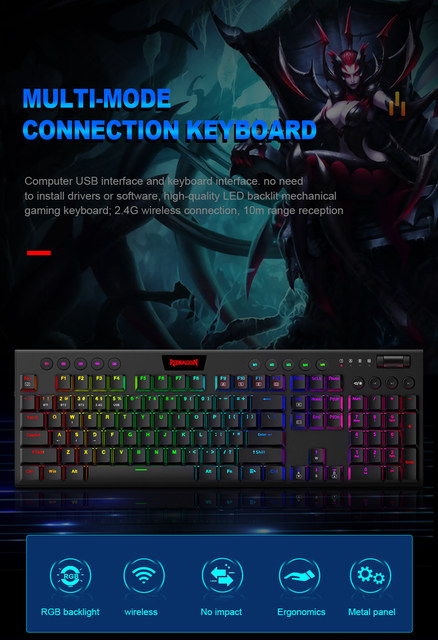
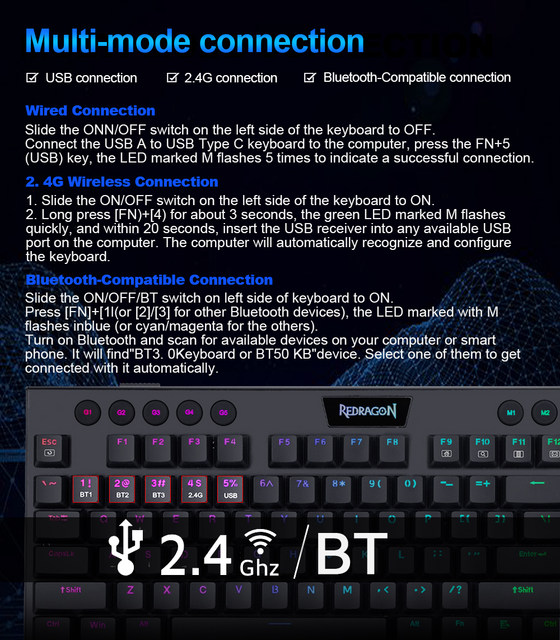
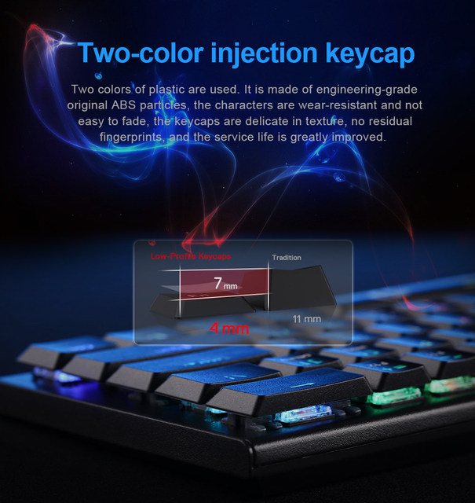
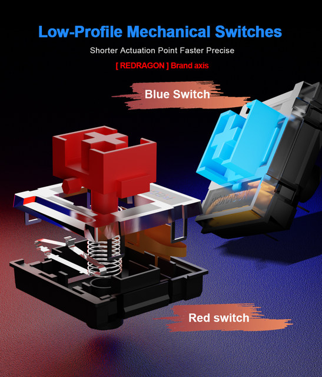
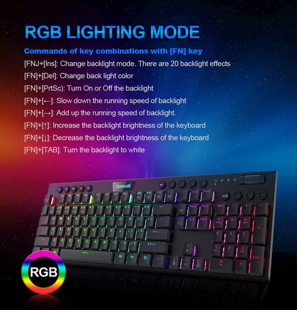
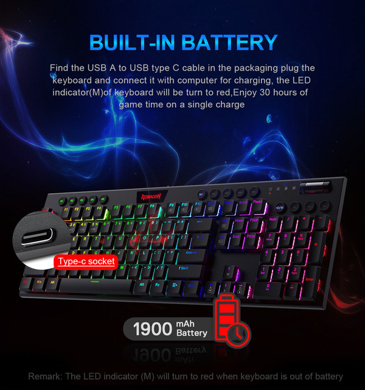
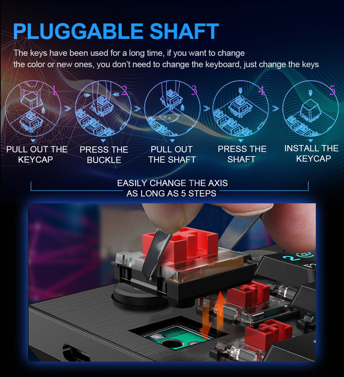
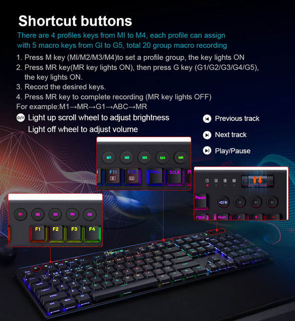
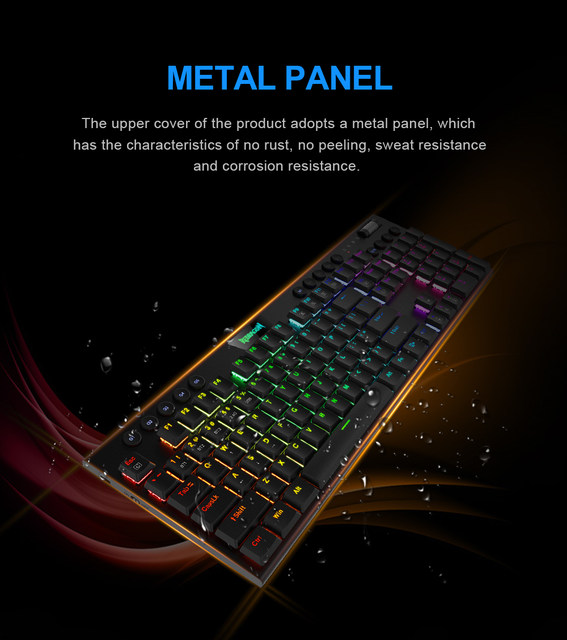
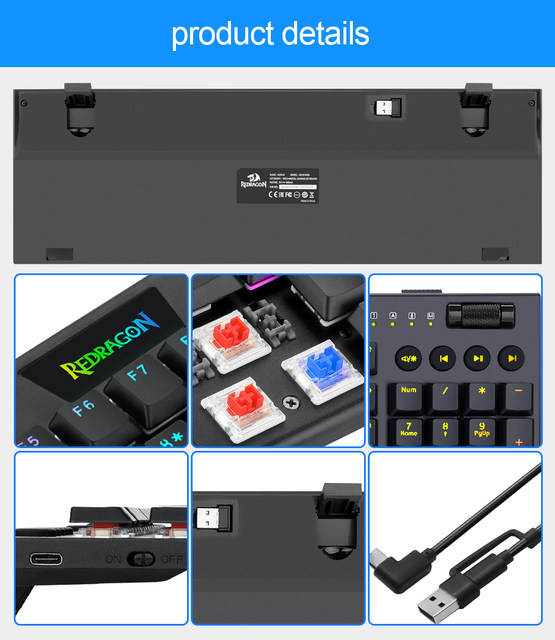
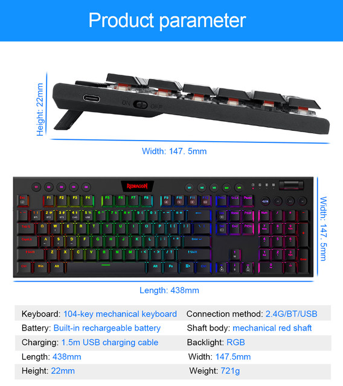
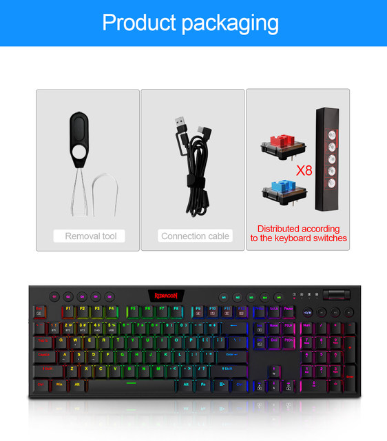
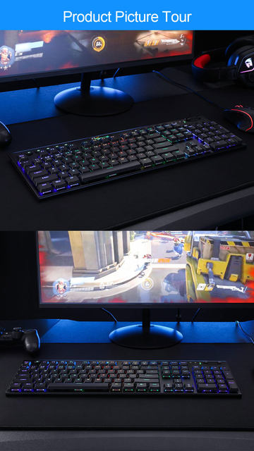
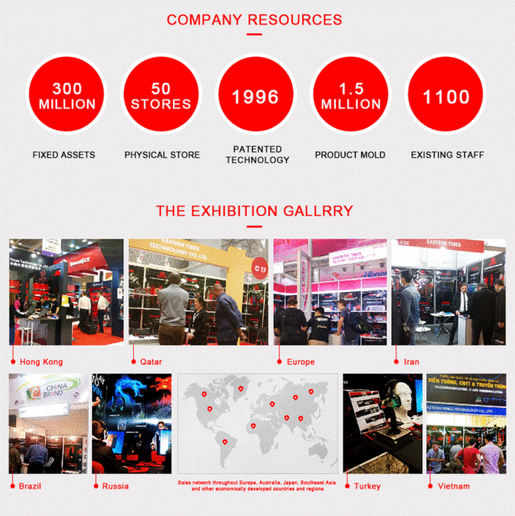
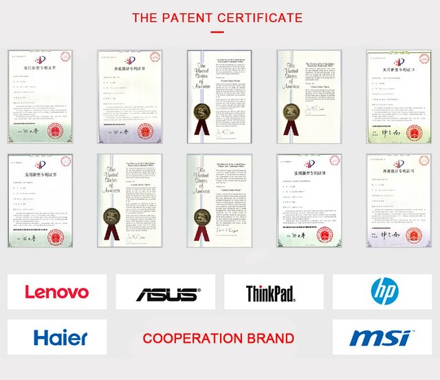